Composed by tools/render-scenes.mjs from the facts alone: what a scene has, where, how many (at most 3 of a thing are drawn), and the size class of each thing. One band per place, in rows; nothing overlaps but a thing and what it is on. These pictures only show that the facts are enough to compose a scene; placing things well is the work of the application. 61 scenes.
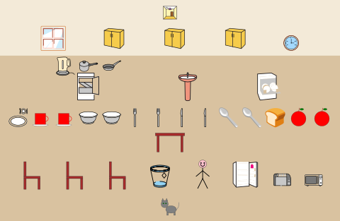
kitchen: 26 of 26 things have a drawing
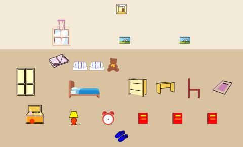
bedroom: 18 of 18 things have a drawing
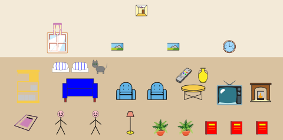
living room: 20 of 20 things have a drawing
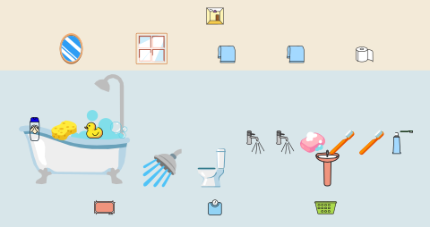
bathroom: 20 of 20 things have a drawingclassroom: 21 of 21 things have a drawing
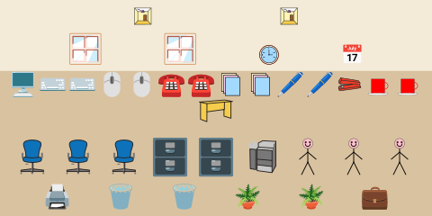
office: 21 of 21 things have a drawingsupermarket: 19 of 20 things have a drawingrestaurant: 19 of 19 things have a drawinglibrary: 17 of 17 things have a drawing
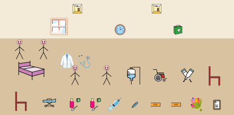
hospital: 21 of 21 things have a drawingworkshop: 22 of 22 things have a drawingtheatre: 12 of 14 things have a drawing
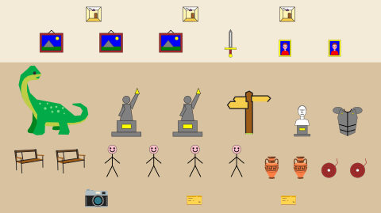
museum: 16 of 16 things have a drawingcafe: 18 of 18 things have a drawingnursery: 19 of 20 things have a drawinglaboratory: 19 of 19 things have a drawing
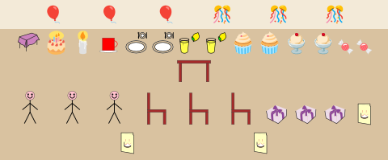
birthday party: 16 of 17 things have a drawingbeach: 17 of 17 things have a drawingfarm: 23 of 23 things have a drawing
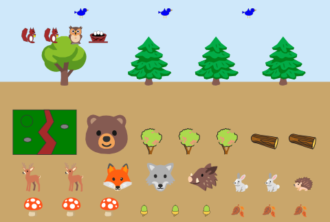
forest: 19 of 19 things have a drawingmountains: 15 of 15 things have a drawing
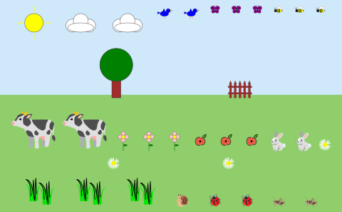
meadow: 16 of 16 things have a drawing
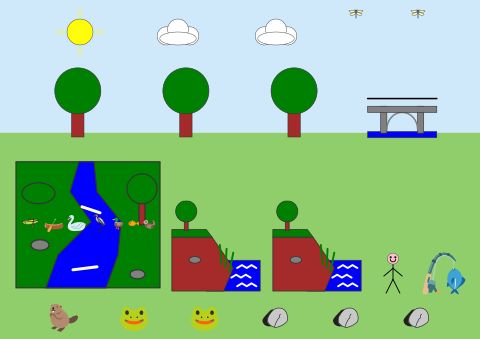
river: 19 of 19 things have a drawing
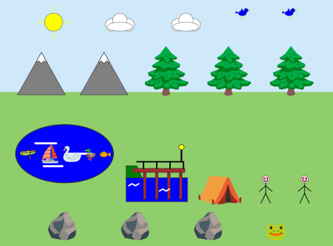
lake: 16 of 16 things have a drawingpond: 14 of 14 things have a drawing
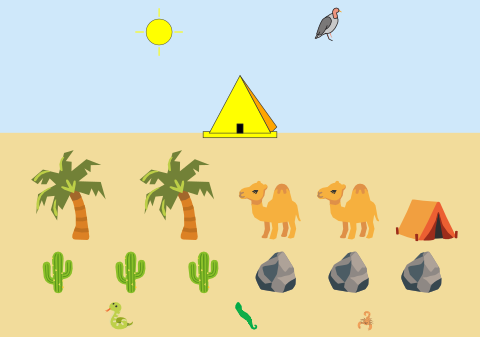
desert: 11 of 12 things have a drawing
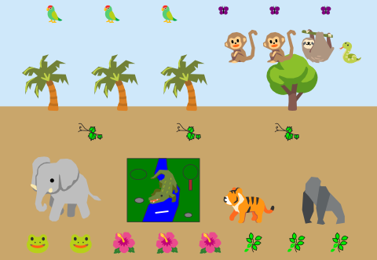
jungle: 16 of 16 things have a drawingsavanna: 16 of 16 things have a drawing
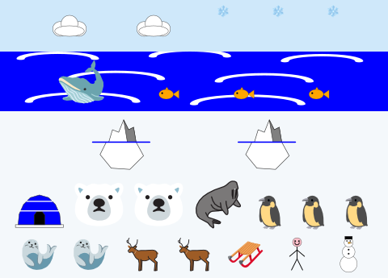
arctic: 15 of 15 things have a drawingisland: 16 of 16 things have a drawing
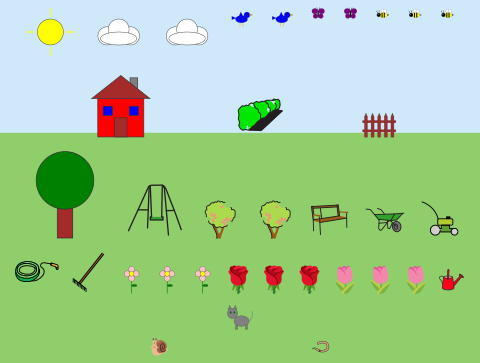
garden: 23 of 23 things have a drawing
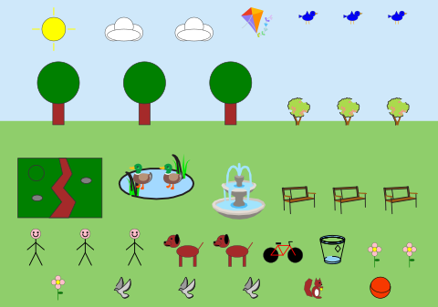
park: 19 of 20 things have a drawing
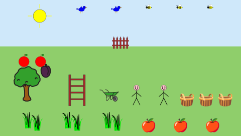
orchard: 12 of 12 things have a drawing
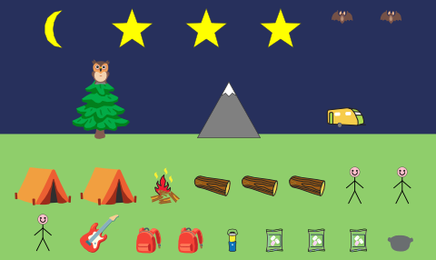
campsite: 16 of 16 things have a drawing
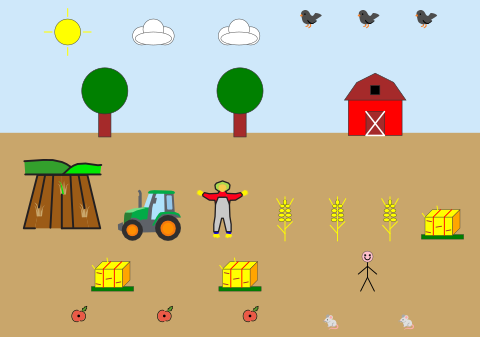
field: 13 of 13 things have a drawing
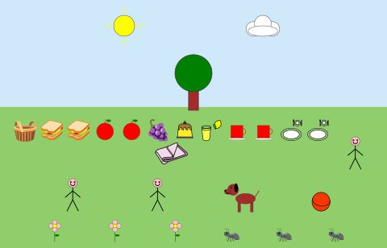
picnic: 17 of 17 things have a drawing
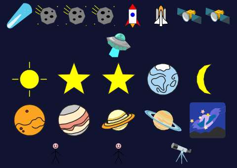
space: 17 of 17 things have a drawing
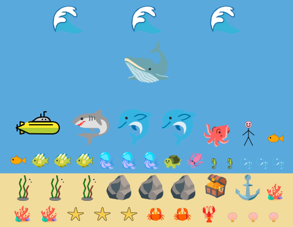
underwater: 23 of 24 things have a drawing
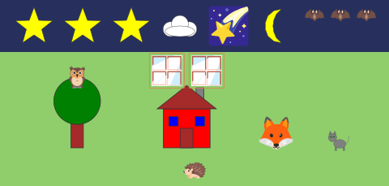
night: 12 of 14 things have a drawingwinter: 18 of 19 things have a drawing
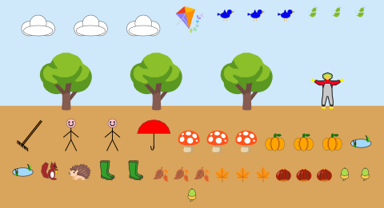
autumn: 19 of 19 things have a drawingspring: 18 of 18 things have a drawingrainy day: 16 of 16 things have a drawingChristmas: 17 of 17 things have a drawingHalloween: 19 of 19 things have a drawingpirate ship: 18 of 19 things have a drawing
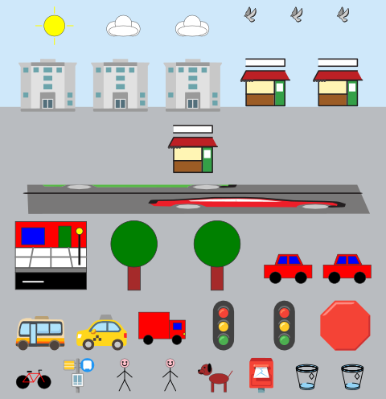
city street: 20 of 21 things have a drawingvillage: 18 of 18 things have a drawingplayground: 18 of 19 things have a drawing
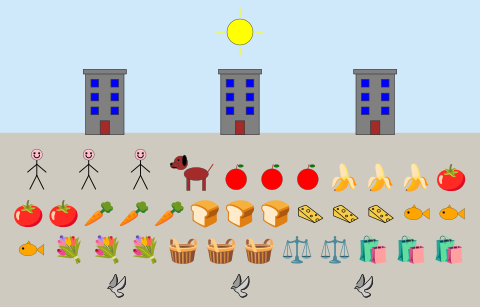
market: 16 of 17 things have a drawing
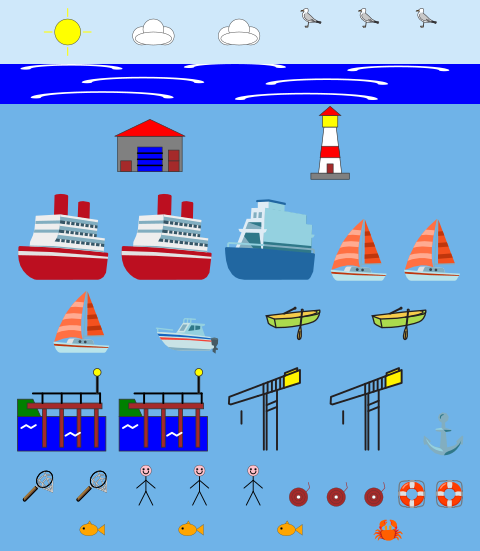
harbour: 20 of 20 things have a drawing
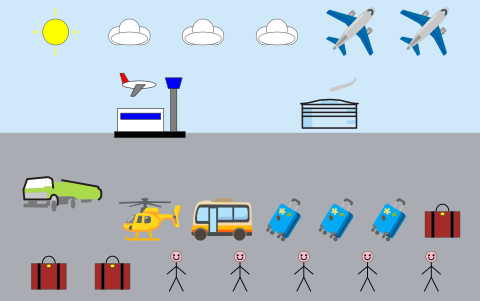
airport: 12 of 15 things have a drawing
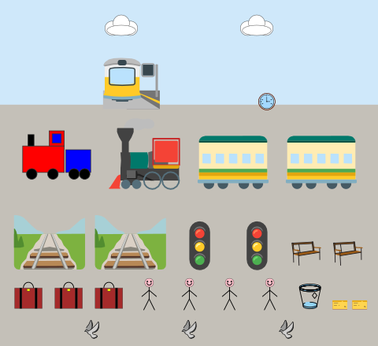
railway station: 15 of 15 things have a drawing
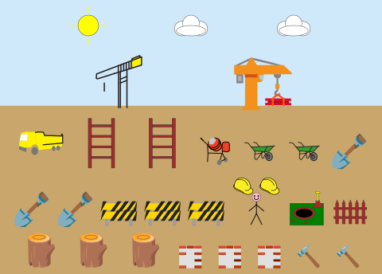
construction site: 17 of 18 things have a drawingpetrol station: 12 of 12 things have a drawing
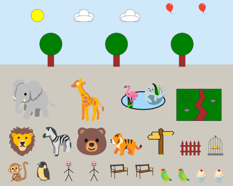
zoo: 23 of 23 things have a drawingfairground: 15 of 16 things have a drawingfootball pitch: 13 of 13 things have a drawingswimming pool: 14 of 15 things have a drawingcircus: 16 of 18 things have a drawing